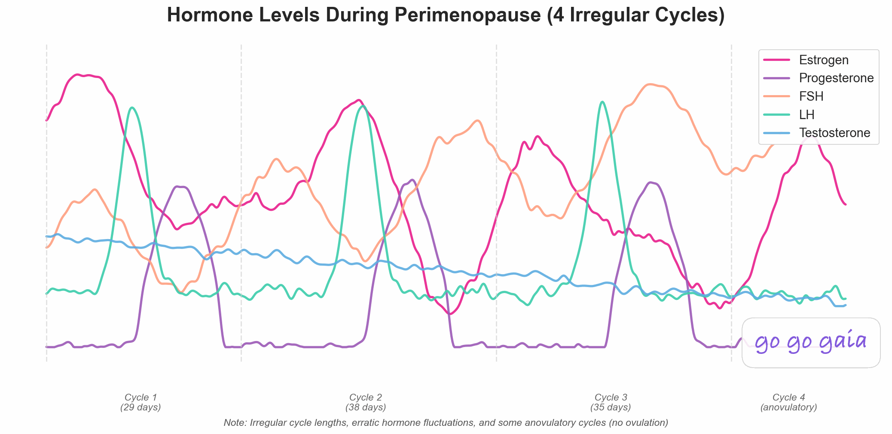

Best Perimenopause Tracking App 2026: 8 Apps Compared

Your period used to show up like clockwork. Now it's 24 days, then 45, then nothing for two months. Add hot flashes, brain fog, and nights where you wake up drenched in sweat, and you've got perimenopause. The right tracking app can help you make sense of it.
Quick Answer: Best App for Perimenopause?
- Best all-in-one perimenopause tracker (free): Go Go Gaia. Symptoms + nutrition + fitness + mood + wearables in one app
- Best dedicated menopause app: Balance. Created by Dr. Louise Newson, ORCHA-certified
- Best free menopause toolkit: Health & Her. CBT exercises, pelvic floor training, meditation
- Best evidence-based coaching: Caria. Published clinical trial for symptom reduction
- Best for existing Flo users: Flo. New Perimenopause Score feature
- Best science-backed cycle tracking: Clue. Dedicated Perimenopause mode
- Best for clinical access: Midday. Mayo Clinic partnership, telehealth
- Best for community support: Perry. Expert events, peer support
Perimenopause can start in your late 30s or early 40s and last 4 to 10 years. That's a long time to feel like your body is making up new rules every month. And most period trackers? They were built for regular 28-day cycles, not the unpredictable hormonal shifts of the menopause transition.
This guide compares 8 apps on what actually matters for perimenopause: handling irregular cycles, tracking the full range of symptoms (there are over 30 documented ones), logging HRT and medications, and giving you data you can bring to a doctor who might otherwise say "it's just stress."
Full Transparency
This guide is published by Holland Neurotech Inc., the company behind Go Go Gaia. We've compared each app based on its actual perimenopause-relevant features, recent user reviews, and publicly available information. Every app here has real strengths, and the best one for you depends on your specific situation.
Our goal is to help you make an informed decision, whether that leads you to Go Go Gaia or another app that better fits your needs.
Educational content, not medical advice. For personal concerns, please consult your doctor.
Step 1: What Perimenopause Tracking Actually Requires
Tracking perimenopause is different from tracking a regular cycle. Here's what to look for in an app:
Irregular Cycle Handling
This is the biggest deal-breaker. During perimenopause, your cycles can go from 24 days to 60+ days to nothing at all, sometimes within the same year. An app that panics when you skip a period or insists on predicting your next one based on averages won't cut it. You need something that tracks what's actually happening, not what a 28-day template says should be happening.
Symptom Breadth
Hot flashes get all the attention, but perimenopause involves over 30 documented symptoms. Night sweats, brain fog, mood changes, sleep disruption, vaginal dryness, joint pain, weight changes, anxiety, heart palpitations, and more. The best apps let you track a wide range of these, not just the obvious ones.
HRT and Medication Tracking
Many women start hormone replacement therapy (HRT) during perimenopause. Tracking when you started, what dose you're on, and how your symptoms respond over time is genuinely useful. The same goes for supplements like black cohosh, magnesium, or vitamin D.
Pattern Recognition Over Time
Perimenopause symptoms change over months and years, not days. An app that shows you weekly or daily snapshots won't reveal the bigger picture. You need something that helps you spot trends over longer periods: "My hot flashes were 8 per week in January and 3 per week in March after starting HRT."
Data for Doctor Appointments
Perimenopause is still frequently dismissed by healthcare providers who haven't had specialized training. Walking into an appointment with tracked data, specific symptom counts, patterns over time, and medication effects, gives you something concrete to work with. It's harder to say "it's just stress" when you've got three months of data showing otherwise.
Wearable Integration
Temperature shifts, sleep disruption, and HRV changes are all measurable signs of perimenopause that wearables can capture automatically. If you already wear an Apple Watch, Oura Ring, or Garmin, an app that pulls in that data saves you from manually logging things you're already tracking.
Step 2: The 8 Apps Compared
For All-in-One Perimenopause Tracking: Go Go Gaia
Best if you want: One app that tracks perimenopause symptoms, cycle changes, nutrition, fitness, mood, and sleep, and shows you how they connect.
Key Features
- Handles irregular and missing cycles without breaking
- 20+ trackable symptoms including perimenopause-specific ones (hot flashes, night sweats, brain fog, mood shifts, sleep disruption)
- Nutrition and fitness tracking alongside symptoms
- Correlation insights showing which lifestyle factors affect YOUR symptoms
- Wearable integration (Apple Watch, Oura Ring, Garmin) for automatic temperature, HRV, and sleep data
- Medication and supplement tracking (HRT, black cohosh, etc.)
- Doctor-ready data export
- AI assistant for health questions (premium)
Strengths
- Tracks symptoms, nutrition, fitness, mood, sleep, and cycle in one free app
- Correlation engine shows connections like "your hot flashes are worse on weeks with less exercise" or "your sleep improves when you limit caffeine after 2pm"
- Wearable data captures temperature shifts and sleep disruption automatically
- No ads, no data selling
Limitations
- iOS only. No Android version yet
- Newer app with a smaller community of perimenopause users
- Full AI features require premium (~$12/month)
- Not menopause-first. It's an all-in-one health app with perimenopause support, not a dedicated menopause app
Who Should Choose This
Go Go Gaia is a good fit if you:
- Want to understand how diet, exercise, sleep, and stress affect your perimenopause symptoms
- Track with a wearable and want that data connected to your symptoms
- Want one app instead of juggling a menopause app, a fitness app, and a nutrition app
- Want to bring organized data to your doctor
Pricing: Free (most features), Premium ~$12/month for full AI insights and advanced correlations.
Download: Available on iOS App Store
For Dedicated Menopause Support: Balance
Best if you want: The most established menopause-specific app, created by a leading specialist.
Key Features
- Created by Dr. Louise Newson, one of the UK's leading menopause specialists
- Symptom tracking with a regularly updated symptom list
- Downloadable Health Report for doctor visits
- Community forum
- Mood, sleep, and journal tracking
- Educational content from Dr. Newson and her team
- Balance+ premium with live sessions, yoga, pilates, recipes, guided meditation
Strengths
- ORCHA-certified (NHS-trusted quality standard)
- Apple Editors' Choice Award
- 4.7/5 on both App Store and Google Play
- Free core app with strong features
- Strong clinical credibility from Dr. Newson
- Health Report feature is genuinely useful for doctor conversations
Limitations
- No wearable integration. Users note having to duplicate data they already track on Apple Watch or Garmin
- Some users report bugs with the Health Report feature after updates
- No nutrition or fitness tracking
- No correlation insights (you track symptoms but can't see what triggers them)
Who Should Choose This
Balance is ideal if you:
- Want a menopause-specific app with strong clinical credibility
- Value expert educational content alongside tracking
- Want a Health Report to bring to your doctor
- Need Android support
Pricing: Free (core), Balance+ premium subscription.
Download: Available on iOS and Android
For Free Menopause Tools: Health & Her
Best if you want: A free, evidence-based toolkit with CBT exercises, pelvic floor training, and meditation alongside symptom tracking.
Key Features
- Symptom tracker with daily calendar logging
- CBT exercises for hot flashes, night sweats, and low mood
- Pelvic floor training program
- Sleep meditation and muscle relaxation audio
- Deep breathing exercises for stress and anxiety
- Custom wellness plans with daily reminders
- Content from UK menopause specialists
Strengths
- ORCHA-certified (#1 rated menopause app by ORCHA)
- Completely free
- Goes beyond tracking into active symptom management (CBT, pelvic floor, meditation)
- Physician-reviewed content
- Cross-platform (iOS and Android)
Limitations
- UK-centric branding and expert network
- Also sells its own supplement line, which could create a conflict of interest in recommendations
- No wearable integration
- No nutrition or fitness tracking
Who Should Choose This
Health & Her is ideal if you:
- Want more than just tracking. You want tools to actively manage symptoms
- Want a completely free app with no paywalled features
- Are interested in CBT, pelvic floor training, or guided meditation for symptom relief
- Need Android support
Pricing: Free.
Download: Available on iOS and Android
For Evidence-Based Coaching: Caria
Best if you want: Structured CBT-based programs backed by a published clinical trial.
Key Features
- CBT-based programs for managing specific symptoms
- Nutritional therapy guidance
- Mindfulness and fitness sessions
- Daily symptom tracking
- Journaling
- Audio and video expert sessions
- Community forum
- AI-powered personalization
Strengths
- Published clinical trial (JMIR mHealth, June 2025) showing measurable symptom reduction
- Focuses on what to DO about your symptoms, not just logging them
- Thoughtful behavioral tools, not just tracking
- Cross-platform (iOS and Android)
Limitations
- Most features require a paid subscription
- No calendar view for visualizing symptom patterns over time (a common user request)
- No wearable integration
- No nutrition tracking
Who Should Choose This
Caria is ideal if you:
- Want guidance on managing symptoms, not just tracking them
- Value evidence-based CBT tools for hot flashes, sleep, and mood
- Want a coaching-style experience with structured programs
- Are willing to pay for a premium subscription
Pricing: Free (basic), Premium ~$10/month or ~$50/year.
Download: Available on iOS and Android
For Existing Flo Users Entering Perimenopause: Flo
Best if you want: To stay in the app you already know, with new perimenopause-specific features.
Key Features
- "Flo for Perimenopause" launched July 2025
- Perimenopause Score (science-backed self-assessment)
- Menopause Timeline for tracking symptom changes over time
- Irregular cycle tracking
- Symptom trend identification
- Curated expert content library
- AI chatbot for health questions
Strengths
- Largest user base (380M+ downloads). If you've tracked your period with Flo for years, you don't have to start over
- Perimenopause Score is a useful self-assessment tool
- Developed with 100+ medical experts
- Strong content library
- Cross-platform (iOS and Android)
Limitations
- Perimenopause features require Flo Premium
- Built on top of a period tracking app, not designed menopause-first
- Privacy history: settled with the FTC in 2021 and paid $59.5M in a class action in 2025 for sharing health data with Meta and Google without consent. Anonymous Mode has been added since
- No nutrition, fitness, or habit tracking
Who Should Choose This
Flo is ideal if you:
- Already use Flo and don't want to start over with a new app
- Want the Perimenopause Score to assess where you are in the transition
- Value a large community and educational content library
- Are comfortable with Flo's data practices (or willing to use Anonymous Mode)
Pricing: Free (basic), Flo Premium ~$40/year or ~$11.49/month.
Download: Available on iOS and Android
For Science-Backed Cycle Tracking: Clue
Best if you want: Evidence-based perimenopause tracking with strong privacy from a trusted cycle tracker.
Key Features
- Dedicated Clue Perimenopause mode
- 14 perimenopause-specific tracking options (hot flashes, night sweats, brain fog, HRT, vaginal dryness)
- Enhanced Cycle View for changing cycle lengths
- Developed by OB-GYNs and certified nurses
- Oura Ring integration
Strengths
- Strong scientific reputation
- GDPR-compliant (Berlin-based)
- Handles the irregular cycles of early perimenopause well
- Oura Ring integration for temperature data
- Clean, minimal interface
- Cross-platform (iOS and Android)
Limitations
- Perimenopause mode requires Clue Plus subscription
- Less educational content about menopause compared to dedicated apps like Balance
- No nutrition, fitness, or habit tracking
- No HRT/medication tracking beyond basic logging
Who Should Choose This
Clue is ideal if you:
- Want a science-backed tracker with a dedicated perimenopause mode
- Prioritize data privacy
- Already use Clue and want to continue as you enter perimenopause
- Use an Oura Ring for temperature tracking
Pricing: Free (basic), Clue Plus ~$40/year.
Download: Available on iOS and Android
For Clinical Access: Midday
Best if you want: Direct access to Mayo Clinic menopause specialists and AI-powered guidance.
Key Features
- Mayo Clinic partnership with hormone therapy decision support
- Telehealth with Mayo Clinic menopause specialists
- AI-powered personalization
- Mental health check-ins
- Wearable sync (Fitbit integration)
- Expert educational content
Strengths
- Mayo Clinic credibility is hard to match
- Telehealth access to actual menopause specialists (not just AI)
- Wearable integration (one of few menopause apps that offers this)
- AI-driven personalization
Limitations
- iOS only
- Subscription pricing not publicly listed (less transparent)
- Newer app with a smaller user base
- Limited public reviews available
Who Should Choose This
Midday is ideal if you:
- Want access to menopause specialists through the app
- Value the Mayo Clinic name and clinical approach
- Want telehealth support alongside symptom tracking
- Are willing to pay for a subscription (pricing not publicly listed)
Pricing: Subscription (quarterly and annual plans, pricing not publicly listed).
Download: Available on iOS App Store
For Community Support: Perry
Best if you want: A supportive community of women going through the same thing, with expert events and peer advice.
Key Features
- Community-first design
- Expert-led live events
- Research-backed courses
- Personalized symptom tracker
- Cycle tracking
- Daily health tips
- Evidence-based protocols for sleep, nutrition, and hormones
Strengths
- Strong, active community that feels like a peer support group
- Free core access
- Regular expert events and educational content
- Good for the emotional side of perimenopause, not just the physical
- Cross-platform (iOS and Android)
Limitations
- More community-focused than clinical tracking
- Less detailed symptom analytics compared to Balance or Go Go Gaia
- No wearable integration
- No nutrition or fitness tracking
Who Should Choose This
Perry is ideal if you:
- Feel isolated in your perimenopause experience and want peer support
- Want access to live expert events and educational courses
- Value community as much as (or more than) data tracking
- Want a free app with a supportive environment
Pricing: Free (core), Premium subscription available.
Download: Available on iOS and Android
Feature Comparison Table
Here's how the 8 apps stack up on features that matter most for perimenopause:
| Feature | Go Go Gaia | Balance | Health & Her | Caria | Flo | Clue | Midday | Perry |
|---|---|---|---|---|---|---|---|---|
| Handles Irregular/Missing Cycles | ✅ | ⚠️ Basic | ⚠️ Basic | ⚠️ Basic | ✅ Perimenopause mode | ✅ Perimenopause mode | ⚠️ Basic | ⚠️ Basic |
| Hot Flash Tracking | ✅ Free | ✅ Free | ✅ Free | ✅ Free | ✅ Premium | ✅ Premium | ✅ | ✅ Free |
| Night Sweat Tracking | ✅ Free | ✅ Free | ✅ Free | ✅ Free | ✅ Premium | ✅ Premium | ✅ | ⚠️ Basic |
| Brain Fog / Cognitive Tracking | ✅ Free | ✅ Free | ⚠️ Basic | ✅ Free | ⚠️ Basic | ✅ Premium | ✅ | ⚠️ Basic |
| HRT / Medication Tracking | ✅ Free | ⚠️ Basic | ❌ | ❌ | ❌ | ⚠️ Basic (Premium) | ✅ | ❌ |
| Nutrition Tracking | ✅ Free | ❌ | ❌ | ⚠️ Guidance only | ❌ | ❌ | ❌ | ❌ |
| Fitness Tracking | ✅ Free | ❌ | ❌ | ⚠️ Sessions | ❌ | ❌ | ❌ | ❌ |
| Correlation Insights | ✅ Multi-factor | ❌ | ❌ | ❌ | ⚠️ Basic (Premium) | ❌ | ✅ AI-powered | ❌ |
| Wearable Integration | ✅ Apple Watch, Oura, Garmin | ❌ | ❌ | ❌ | ❌ | ⚠️ Oura only | ⚠️ Fitbit | ❌ |
| Sleep Tracking | ✅ Free | ✅ Free | ✅ Meditation | ✅ Free | ⚠️ Basic | ⚠️ Basic | ✅ | ⚠️ Basic |
| Doctor Data Export / Health Report | ✅ Free | ✅ Health Report | ❌ | ❌ | ⚠️ Limited | ⚠️ Limited | ✅ Telehealth | ❌ |
| CBT / Therapeutic Tools | ❌ | ❌ | ✅ Free | ✅ Premium | ❌ | ❌ | ✅ | ❌ |
| Educational Content | ⚠️ Basic | ✅ Expert-written | ✅ Specialist content | ✅ Expert sessions | ✅ Large library | ✅ Science-backed | ✅ Mayo Clinic | ✅ Expert events |
| Community / Forums | ❌ | ✅ Forum | ❌ | ✅ Forum | ✅ Large community | ❌ | ❌ | ✅ Strong community |
| Privacy Practices | ✅ Strong | ✅ UK-regulated | ✅ Physician-reviewed | ✅ | ⚠️ $59.5M settlement | ✅ GDPR-compliant | ✅ | ✅ |
| Free Tier Quality | ✅ Generous | ✅ Good | ✅ Fully free | ⚠️ Limited | ⚠️ Limited | ⚠️ Perimenopause = paid | ⚠️ Subscription | ✅ Good |
| Platforms | iOS only | iOS + Android | iOS + Android | iOS + Android | iOS + Android | iOS + Android | iOS only | iOS + Android |
| Best For | All-in-one tracking | Dedicated menopause | Free tools & CBT | Evidence-based coaching | Existing Flo users | Science-backed cycles | Clinical access | Community |
Step 3: Making Your Decision
Here's the bottom line for each app:
Choose Balance if:
- You want a dedicated menopause app from a leading specialist
- You value ORCHA-certified clinical credibility
- You want a Health Report to bring to your doctor
- Expert-led educational content matters to you
Choose Health & Her if:
- You want a completely free app with no paywalled features
- You want active symptom management tools (CBT, pelvic floor training, meditation)
- You want more than just tracking. You want to DO something about your symptoms
Choose Caria if:
- You want structured coaching programs backed by a published clinical trial
- You're looking for CBT-based tools to manage hot flashes, mood, and sleep
- You want guidance, not just a place to log symptoms
Choose Flo if:
- You've tracked your period with Flo for years and don't want to start over
- You want the Perimenopause Score self-assessment
- You value a large community and educational content library
- You're comfortable with Flo's data practices
Choose Clue if:
- Privacy is your top priority
- You want a science-backed tracker with a dedicated perimenopause mode
- You prefer a clean, minimal interface
- You use an Oura Ring
Choose Midday if:
- You want telehealth access to menopause specialists
- You value the Mayo Clinic partnership and clinical approach
- You want AI-powered personalization alongside specialist access
Choose Perry if:
- You want a community of women going through the same experience
- Expert-led live events and courses matter to you
- You value the emotional and social side of the transition as much as the physical
Choose Go Go Gaia if:
- You want to track symptoms, nutrition, fitness, mood, and cycle in one app
- You want to see correlations between your lifestyle and your symptoms
- You track with a wearable (Apple Watch, Oura, Garmin)
- You want to bring organized data to your doctor
- You'd rather have one app than three
Privacy Considerations
Perimenopause data is deeply personal: symptom patterns, HRT use, mood changes, fertility status. Here's how each app handles it:
- Go Go Gaia and Clue have the strongest privacy commitments. Go Go Gaia keeps data private and doesn't sell to third parties. Clue is based in Berlin (subject to strict EU GDPR laws) and has explicitly committed to not sharing data with US authorities.
- Balance is UK-regulated and created by a medical professional. As a UK-based app, it's subject to UK data protection laws.
- Health & Her features physician-reviewed content and is UK-based. It has a clean privacy track record.
- Caria and Perry are smaller companies with clean privacy records. No public data-sharing controversies.
- Flo has the most complicated privacy history. It settled with the FTC in 2021 for sharing period and pregnancy data with Meta and Google without user consent. A $59.5M class action settlement followed in 2025. Flo has since added "Anonymous Mode" and taken steps to improve its data practices, but the track record is worth knowing.
- Midday is partnered with Mayo Clinic, which lends credibility to its data handling. As a newer app, it has a limited public track record.
Getting the Most Out of Perimenopause Tracking
Whichever app you choose, here's how to make it actually useful:
- Track daily for at least 3 months. Perimenopause patterns emerge slowly. You won't see meaningful trends in two weeks. Give it time.
- Log more than hot flashes. Mood, sleep, brain fog, joint pain, anxiety: they all matter. The symptoms you think are unrelated may turn out to be connected.
- Note your triggers. Caffeine, alcohol, stress, poor sleep. Tracking what happened BEFORE a symptom is just as important as logging the symptom itself.
- Track HRT and supplements if you're taking them. This is how you see whether they're actually helping over time. "I feel better" is less convincing to your doctor than "my weekly hot flash count dropped from 12 to 4 after starting estradiol."
- Bring your data to your doctor. Perimenopause is still often dismissed without data. Three months of tracked symptoms, patterns, and medication effects gives your healthcare provider something concrete to work with.
- Be patient. Perimenopause can last 4 to 10 years. Your symptoms will change. Your tracking needs will change. That's normal. Start simple and adjust as you go.
Pro Tip
If you're not sure which app to start with, pick one that covers your biggest need. If you want symptom management tools, try Health & Her or Caria. If you want to see how lifestyle affects your symptoms, try an app with correlation features. If community matters most, try Perry. You can always switch later.
Frequently Asked Questions
What should I look for in a perimenopause tracking app?
Look for an app that handles irregular or missing cycles without breaking, tracks a wide range of perimenopause symptoms (not just hot flashes), supports HRT or medication tracking, shows patterns over months (not just days), and lets you export data for doctor appointments. Wearable integration is a bonus for capturing temperature shifts and sleep disruption automatically.
Can period tracker apps handle perimenopause?
Some can, but most struggle. Standard period trackers predict your next cycle based on past regularity. During perimenopause, cycles can jump from 24 days to 60+ days to nothing. Apps like Clue and Flo have added dedicated perimenopause modes to handle this better. Others, like Balance and Health & Her, were built specifically for the menopause transition.
Is there a free perimenopause app?
Yes. Health & Her is completely free and includes CBT exercises, pelvic floor training, and meditation alongside symptom tracking. Balance offers a strong free tier with symptom tracking and educational content. Go Go Gaia provides free perimenopause symptom tracking with nutrition, fitness, and wearable integration. Perry offers free community access and symptom tracking.
What's the difference between a menopause app and a period tracker?
Period trackers focus on predicting your next cycle and fertile window. Menopause apps focus on tracking symptoms like hot flashes, night sweats, brain fog, and mood changes. They also often include HRT tracking, educational content about hormone changes, and tools for doctor conversations. During perimenopause, you may need features from both categories, since your period is still happening (unpredictably) while menopause symptoms are starting.
How can tracking help me manage perimenopause symptoms?
Tracking reveals patterns you'd miss on your own. You might discover that your hot flashes are worse after alcohol, that exercise reduces your brain fog, or that certain supplements are actually helping. This data is especially valuable for doctor appointments, where perimenopause symptoms are often dismissed without evidence. Consistent tracking over 3+ months gives both you and your healthcare provider something concrete to work with.
Should I track perimenopause with a wearable?
Wearables can be very useful during perimenopause. They automatically capture temperature shifts (which become erratic as ovulation becomes less regular), sleep disruption (a common perimenopause symptom that's hard to self-report accurately), and HRV changes that reflect stress and hormonal shifts. If you already own an Apple Watch, Oura Ring, or Garmin, look for an app that syncs with your device so you don't have to log that data manually.
Final Thoughts
There's no single "best" perimenopause app, because perimenopause itself looks different for everyone. Some women mostly deal with hot flashes and night sweats. Others struggle more with brain fog, anxiety, or sleep disruption. What matters is finding a tracker that handles YOUR symptoms and helps you see patterns over time.
If you want a dedicated menopause app with strong clinical backing, Balance is the most established option. If you want free tools to actively manage symptoms (CBT, pelvic floor, meditation), Health & Her stands out. If you want evidence-based coaching backed by a published clinical trial, Caria is worth a look. If you've used Flo for years, their new perimenopause features let you stay in a familiar app. If privacy and science matter most, Clue's perimenopause mode is a strong choice. If you want access to menopause specialists, Midday's Mayo Clinic partnership is unique. If community support matters, Perry does that well. And if you want to track symptoms, nutrition, fitness, mood, and sleep in one place, and see how they all connect to your symptoms, Go Go Gaia covers the most ground in a single free app.
The most important thing? Start tracking. Perimenopause can last years, and the data you collect now will help you and your doctor make better decisions down the road.
Related Articles
- Perimenopause Guide: Symptoms, Stages & What to Expect
- Menopause Guide: What Happens After Perimenopause
- Best Period Tracker App 2026: Clue vs Flo vs Ovia (6 Apps Compared)
- Best PCOS Tracking App 2026: 7 Apps Compared
Ready to Track Your Perimenopause?
If Go Go Gaia sounds like the right fit, with all-in-one perimenopause tracking, correlation insights, and wearable integration, download it free and give it a try.